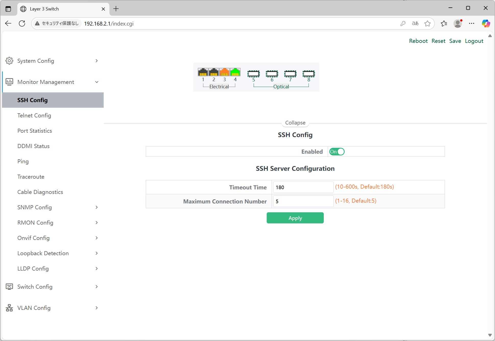

Binardat 10G SW
2025年6月28日
寝室においても大丈夫くらいな音で発熱も大丈夫そう。いいMNGだった。
商品情報
4x10G Eth + 4x10G SFP ManagedでBGPも吐ける、￥31,999は良い。
管理コンソールに接続
初期IPの192.168.2.1にアクセスする。admin:adminで入れる。

ホーム
ポートのステータスが確認できる。MACやSerialは管理コンソールで消している。
System Config
IP ConfigでVLANごとにIPをつけれる。

Monitor Management
SSH ConfigでSSHの設定ができる。デフォルトは無効。

SSHしてみる。Ciscoライクやん。
ssh admin@192.168.2.1
Switch#
Switch#show running-config
!
no service password-encryption
!
hostname Switch
sysLocation Default
sysContact Default
!
multi config access
!
username admin privilege 15 password 0 admin
!
authentication line console login local
!
!
!
fanspeed auto
!
!
!
ssh-server enable
!
!
!
!
!
!
!
!
!
vlan 1
!
Interface Ethernet1/0/1
!
Interface Ethernet1/0/2
!
Interface Ethernet1/0/3
!
Interface Ethernet1/0/4
!
Interface Ethernet1/0/5
!
Interface Ethernet1/0/6
!
Interface Ethernet1/0/7
!
Interface Ethernet1/0/8
!
interface Vlan1
ip address 192.168.2.1 255.255.255.0
!
no login
!
end
SNMP Config 吐けそうで良い。
Switch Config
Jumbo Frame 9000にしたかったので良い。
VLAN Config
VLAN ID 最大何個まで動くかは確認したい。

VLANハイブリットを初めて知った。Nativeはタグが付いていないフレームを受け取ったとき、UnTaggedは指定したVLANの時はタグを付けずに送る。複数指定するとヤバいと思うけどなぜ指定ができるのか。
DHCP Config
DHCP Serverも搭載。
ACL Config
L2, L3で書ける。時間帯の指定もできる。
Ring Network
L2リング系のプロトコルも対応。Rapid STP対応しているのかな？

Route Config
スタティックもダイナミックもそこそこ色々ある。

Multicast Manage
IGMPあればとりあえず良い。

QoS Config
まあ普通。
SpeedTest
メインのデスクトップは2.5Gなのでほぼ理論値
SNMP
- Global Config -> Agent State -> Enabled
- Community Config ->
- Community Name -> public
- Access Priority -> Readonly